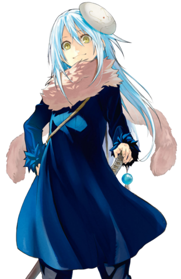
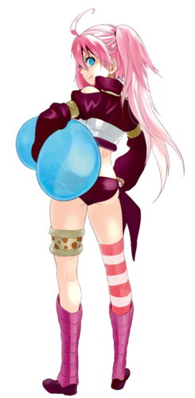
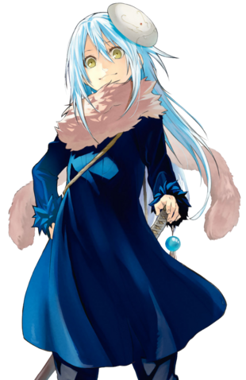
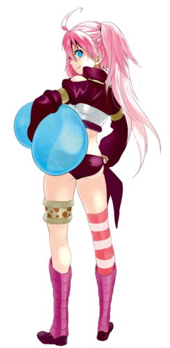

Main Characters
Rimuru Tempest

Rimuru Tempest (リムル゠テンペスト Rimuru Tenpesuto), formerly known as Satoru Mikami, is the main protagonist of That Time I Got Reincarnated as a Slime.
Partner and best friend of the True Dragon Veldora Tempest, Rimuru is the founder and King of the Jura Tempest Federation in Jura Forest. He is one of the Demon Lords of the Octagram. He lives in Rimuru City, the Capital city of the Jura Tempest Federation
Milim Nava

Milim Nava (ミリム・ナーヴァ mirimu nāva) is the second seat Demon Lord of the Octagram. She is one of the strongest and oldest among all other demon lords, known as the "Destroyer," a demon lord with the threat level of "Catastrophe." Milim is a carefree individual who just wants to do something to stave off her boredom.
Rimuru Tempest
Rimuru Tempest (リムル゠テンペスト Rimuru Tenpesuto), formerly known as Satoru Mikami, is the main protagonist of That Time I Got Reincarnated as a Slime. Partner and best friend of the True Dragon Veldora Tempest, Rimuru is the founder and King of the Jura Tempest Federation in Jura Forest. He is one of the Demon Lords of the Octagram. He lives in Rimuru City, the Capital city of the Jura Tempest Federation
Milim Nava
Milim Nava (ミリム・ナーヴァ mirimu nāva) is the second seat Demon Lord of the Octagram. She is one of the strongest and oldest among all other demon lords, known as the "Destroyer," a demon lord with the threat level of "Catastrophe." Milim is a carefree individual who just wants to do something to stave off her boredom.